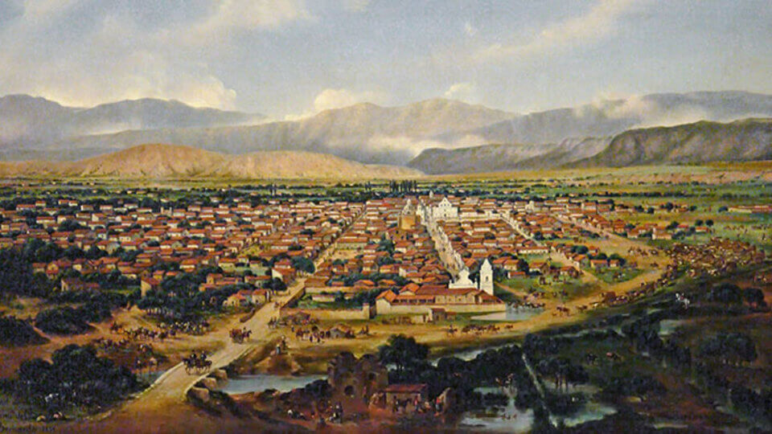
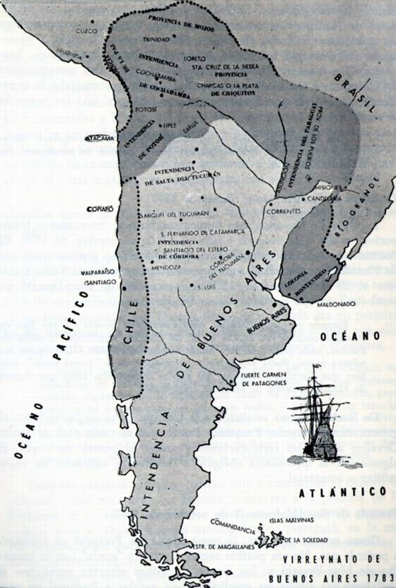
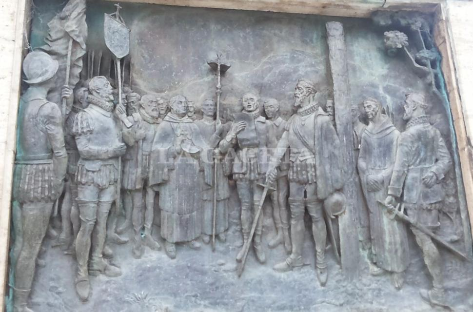
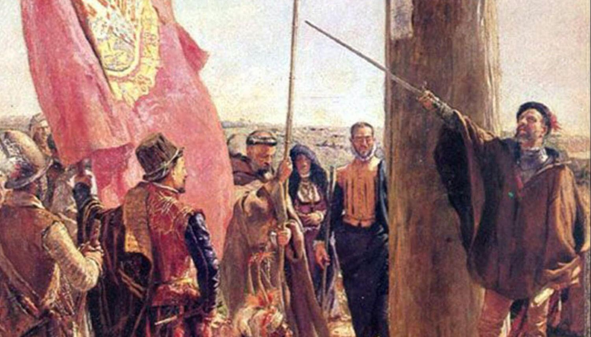

Ocupar El Territorio
El propósito de ocupar y fundar ciudades en el territorio de la por entonces Gobernación del Tucumán, era para brindar protección a las riquezas de las minas de plata del Potosí, consolidar un sistema de comunicación entre ellas, facilitar el tránsito de documentación y de mercaderías, creando así un sistema comercial sólido. Enviado por el Virrey Toledo, fue Hernando de Lerma quien logró constituir la que sería la Ciudad de San Felipe del Valle de Lerma. El nombre de la ciudad derivó, con el paso del tiempo, en Salta. Hay tres versiones acerca del origen de este nombre: una señala que devenía de los tagaretes canal o cauce natural de agua, pantanos y zanjones que abundaban por entonces en el valle, a los cuales se debía la necesidad de saltar para sortearlos. Luego se relacionó al vocablo aymara SAGTA (lugar hermoso). Hoy estas versiones son desestimadas, pues se sabe que fue el nombre de una comunidad aborigen que habitó el territorio de la actual capital la que dio el nombre a la ciudad y luego a la provincia.

¿Por Que El Nombre Salta?
El nombre Salta es de origen indígena pero su traducción al castellano ha resultado difícil para los lingüistas y sobre su significado exacto se han propuesto las más disímiles teorías. Durante la época virreinal la población prosperó rápidamente pues era abastecedora de materias primas para la opulenta Potosí. Formó parte del Virreinato del Perú hasta 1776, cuando la Corona de España creó el Virreinato del Río de la Plata. En 1783 fue designada capital de la Intendencia de Salta del Tucumán.

¿Por Que El Nombre Salta?
El nombre Salta es de origen indígena pero su traducción al castellano ha resultado difícil para los lingüistas y sobre su significado exacto se han propuesto las más disímiles teorías. Durante la época virreinal la población prosperó rápidamente pues era abastecedora de materias primas para la opulenta Potosí. Formó parte del Virreinato del Perú hasta 1776, cuando la Corona de España creó el Virreinato del Río de la Plata. En 1783 fue designada capital de la Intendencia de Salta del Tucumán.
Guerra Gaucha
Con el nombre de Guerra gaucha se conoce la lucha de milicias y guerrillas llevada adelante en el Noroeste argentino. contra los ejércitos realistas durante la Guerra de Independencia de la Argentina (1810-1824), en la Provincia de Salta durante el período comprendido entre 1814 y 1825. En esa época, la provincia de Salta incluía a los actuales Jujuy y Tarija, por lo que la Guerra Gaucha se libraba también en esos territorios, e incluso territorios que luego serían de la Gobernación de Los Andes y territorios de la intendencia de Potosí hoy departamento de Potosi/Bolivia Estas milicias de «Infernales» estaban constituidas por gauchos, tanto del norte argentino, como de las republiquetas del sur Boliviano (republiqueta de Tarija, republiqueta de los Cintis, Republiqueta de la Laguna) comandados por el general Martín Miguel de Güemes, aunque continuó después de su muerte, en 1821.

Primera Juntada De Gobierno
El Cabildo de la ciudad adhirió a la Primera Junta de Gobierno creada tras la Revolución de Mayo, convirtiéndose la ciudad en cuartel general de las expediciones al Alto Perú en la lucha contra los ejércitos realistas. El 20 de febrero de 1813 las tropas de las Provincias Unidas del Río de la Plata, a las órdenes del general Manuel Belgrano, lograron una decisiva segunda victoria sobre los realistas en la batalla de Salta, suceso bélico que aseguró el control patriota del norte del actual territorio argentino. Como consecuencia del triunfo, el mayor general Eustoquio Díaz Vélez, gobernador militar de la Intendencia de Salta del Tucumán inmediatamente colocó la Bandera de la Argentina en el balcón del Cabildo de Salta por lo que le cabe la característica de haber sido la primera ciudad en que las autoridades revolucionarias enarbolaron por primera vez la bandera celeste y blanca de manera oficial. Así, en julio de 1581 en la ciudad de Santiago del Estero, Lerma dio a conocer en un pregón los motivos que justificaban la elección del sitio para la fundación de Salta en el valle, donde destaca el temperamento y la bondad del lugar. Al año siguiente plantó el rollo, picote o el Palo de la Justicia en el centro de la que hoy es la Plaza 9 de Julio.